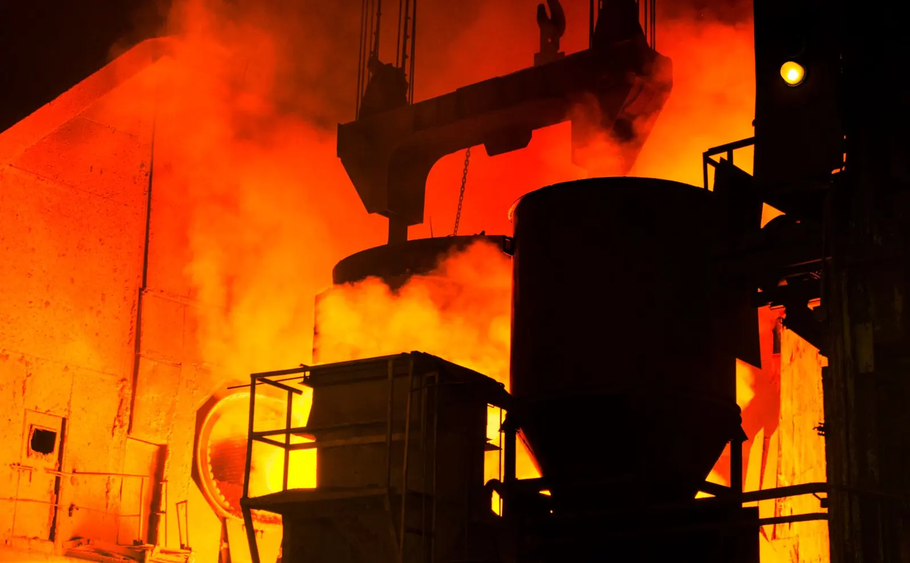

Recycled rebar
Scrap in. Rebar out. Australian both ways.
Reinforcing bar is the second-largest home for recycled steel on earth, and Australia's rebar is already made from scrap in electric arc furnaces. The missing piece is a documented, consistent, locally processed scrap supply. That is what Global Steel is built to be.
The loop
Five steps, all of them in Australia
Australia's reinforcing bar, mesh rod and merchant bar are produced in electric arc furnaces that run on scrap steel, with mills in Victoria and New South Wales (InfraBuild). Global Steel's role is steps 01 and 02: recovering the scrap and processing it to a specification a mill can use. Steps 03 to 05 describe how the industry works, not a current Global Steel contract.
The carbon case
Less than a third of the carbon
The World Steel Association's 2023 figures put blast-furnace steel at 2.32 tonnes of CO₂ per tonne of crude steel and scrap-based electric arc furnace steel at 0.70. The difference is the scrap. Every tonne of clean scrap that reaches an EAF is a tonne that did not need to be made from iron ore and coal.
Source: World Steel Association, Sustainability Indicators 2024 report (2023 data). Figures are industry averages, not a specific mill's.


What a mill gets from us
A single-grade feedstock with a paper trail
- One grade. Processed high-tensile spring steel, around 99% ferrous, around 99% free of fabric and foam — the same product every load, from one process.
- Volume you can schedule. 6–10 t a day, 130–250 t a month, year-round.
- Form to suit the charge. Loose for buyers with their own shredding; dense bales for buyers who want counted, stackable loads.
- Origin on paper. Every load ships with its statement — source stream, process, weighed output, bale count.
- Sixty kilometres away. North Geelong to Victoria's EAF mill at Laverton is a short freight leg, not a shipping route.
For builders and specifiers
Recycled content you can point to
Green building rating tools reward steel with documented recycled content and responsible sourcing. A rebar supply chain that starts with weighed, documented Australian scrap gives a project something to show — not a percentage on a brochure.
Documented scrap
Every tonne of Global Steel feedstock has a load statement: where it came from, how it was processed, what it weighed.
EAF steelmaking
Scrap-based EAF steel carries the lowest carbon of the mainstream routes — 0.70 t CO₂ per tonne against 2.32 for blast furnace (worldsteel, 2023).
Australian both ways
Recovered here, processed here, melted here, built with here. No export leg, no import leg.
Rating-tool credits depend on the mill's certifications and Environmental Product Declarations, not on Global Steel alone. We supply the scrap side of that evidence.
Where this goes
Global Steel → metal recycling → recycled products
We do not need to own a mill to close the loop. Aggregate and process scrap to a defined specification, partner with a steelmaker, and — as volumes allow — market a range of products made from the resulting recycled steel. Rebar first, because it is the biggest and it is already Australian-made.
Mills, rollers, fabricators, builders
If you make, specify or buy reinforcing steel and want a documented Australian scrap supply behind it, talk to us.